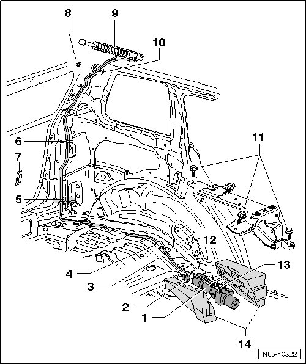

Hydraulic Rear Lid Drive Motor Assembly Overview
Rear Lid
Hydraulic Rear Lid Drive Motor Assembly Overview
• Dispose of the oil and rag properly.

1 ABS Hydraulic Pump
• Removing and Installing, refer to --> [ Hydraulic Rear Lid Drive Motor Hydraulic Pump ] Rear Lid
• Fill the hydraulic oil and check the level, refer to --> [ Hydraulic Oil, Filling and Checking Level ] Hydraulic Oil, Filling and Checking Level
2 Connector
3 Hydraulic lines
• Tight on hydraulic cylinder, to be loosened only at hydraulic pump
• Removing and Installing, refer to --> [ Hydraulic Rear Lid Drive Motor Hydraulic Cylinder ] Rear Lid
4 Foam strip
• Self-adhesive
5 Rear lid control module
• Removing and Installing, refer to --> [ Control Module ] Rear Lid
6 Cable bracket
7 Rear lid inclination sensor
• Removing and Installing, refer to --> [ Vehicle Inclination Sensor ] Rear Lid
8 Ball stud on rear lid hinge
9 Hydraulic cylinder
• Installed on the left side only
• With hydraulic lines
• Removing and Installing, refer to --> [ Hydraulic Rear Lid Drive Motor Hydraulic Cylinder ] Rear Lid
10 Grommet
11 Bolt
• Bolt must always be replaced
• Quantity: 3
• 60 Nm
12 Bracket
13 Hydraulic connections
14 Sound enclosure
• One-part, only to be folded up in upper area.